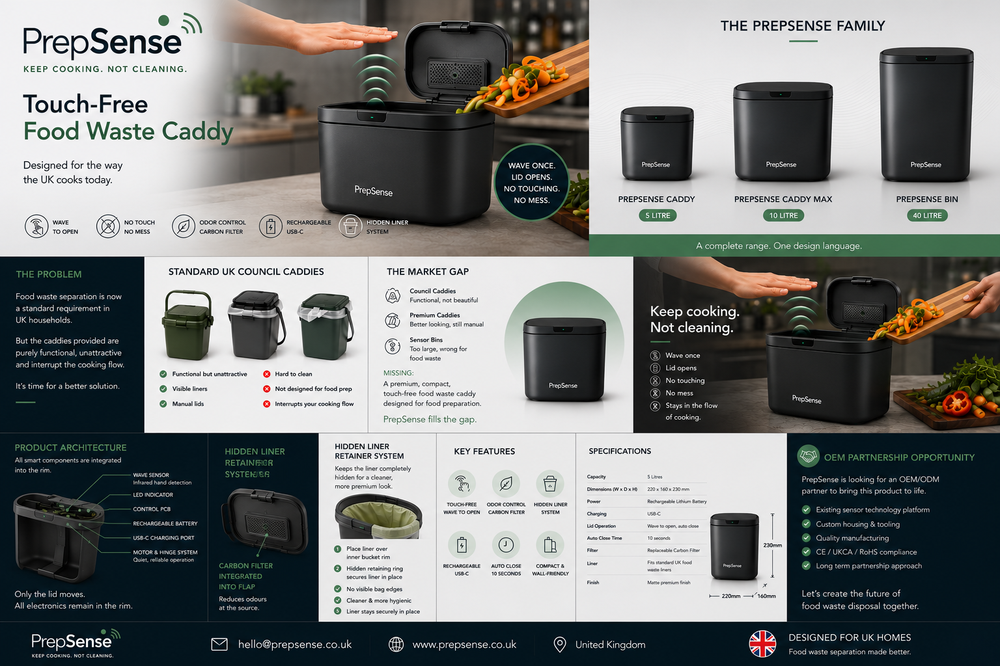

Manufacturing Partnership Opportunity
PrepSense is seeking manufacturing and OEM partners to help develop a premium touch-free food waste caddy for the UK market.
Back to HomepagePrepSense is seeking manufacturing and OEM partners to help develop a premium touch-free food waste caddy for the UK market.
Back to HomepageUK households are increasingly required to separate food waste, but most countertop caddies remain basic, manual and unattractive.
PrepSense combines premium kitchen design, touch-free operation, hidden liner retention and odour control in a compact 5 litre countertop product.

We are interested in speaking with UK and international manufacturers with experience in: